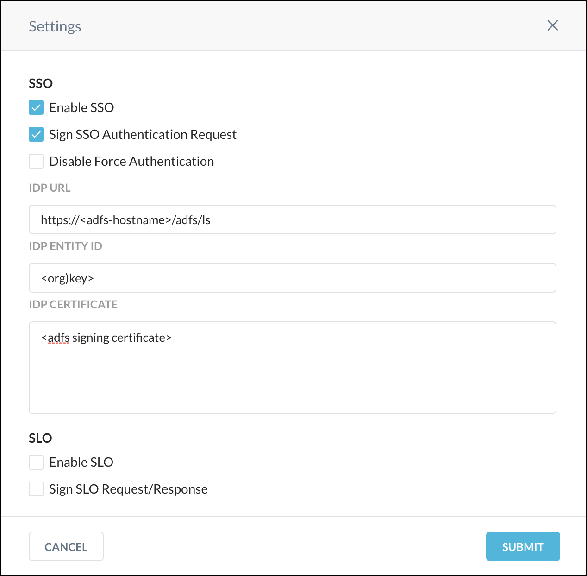

Configure Netskope SSO for ADFS
To complete these steps, you need the IdP URL, the IdP Entity ID, and the IdP certificate from ADFS. The IdP URL and IdP Entity ID can be found by browsing the federation metadata URL on the ADFS server (ex. https://<adfs domain>/FederationMetadata/2007-06/FederationMetadata.xml). The URL can be found from the meta data of the IdP. Copy the value of the EndpointReference (ex. https://<adfs domain>/adfs/ls). For example, for ADFS you can obtain it from the line:
SingleSignOnServiceBinding=…..HTTP-POST* Location=”https://adfs.test.com/adfs/ls/”
The IdP Entity ID can also be found from the ADFS metadata. For example, for ADFS you can obtain it from the line:
entityID=”https://adfs.test.com/adfs/services/trust”
Download the IdP certificate from the ADFS 2.0 Management window under Certificates > Token Signing > Export in Base 64 encoded format.
Login to the Netskope UI (
https://<tenant_hostname>.goskope.com) and go to: Settings > Administration > SSO. Scroll down the page and click Edit Settings.Enter and select the following:
Enable SSO: Enable this checkbox.
Sign SSO Authentication Request: Enable this checkbox.
Note
Do not disable this option. If you do not want to sign the authentication request, disable this in ADFS and run this command in the PowerShell:
PS C:\Users\Administrator> Set-ADFSRelyingPartyTrust -TargetIdentifier <org_key> -SignedSamlRequestsRequired$false
IdP URL: Enter the IdP URL from ADFS.
IdP Entity ID: Enter the IdP Entity ID from ADFS.
IdP Certificate: Paste the certificate contents from ADFS.
 Click Submit.
Admin User Experience
When admin users go to Netskope URL (https://<tenant_hostname>.goskope.com), they will be redirected to the ADFS log in page for authentication. Once they authenticate using ADFS, they will be single signed on from ADFS to the Netskope UI and be mapped automatically to their assigned admin roles.
To Disable SSO
Once this feature is turned on, the Netskope UI no longer allows ANY local authentication. You have to go to a specific URL (https://<tenant_hostname>.goskope.com/locallogin) and login as tenant admin to turn this feature off.